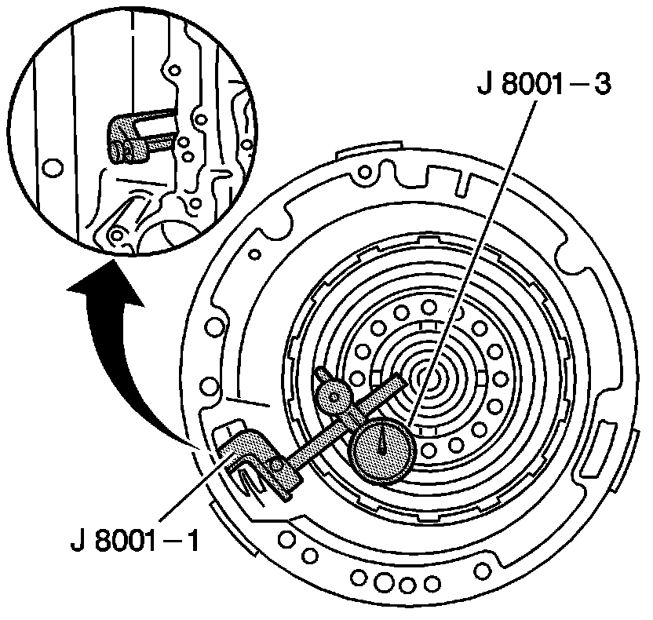

Direct Clutch Piston Travel Check
Direct Clutch Piston Travel Check
Tools Required
^ J 8001 Dial Indicator Set
^ J 7057 Dial Indicator Plunger Extension

1. Attach the J 7057 (not visible in the illustration) to the J 8001-3.
2. Using the J 8001-1, mount the J 8001-3 to the transmission case through the opening in the case barrel. Place the J 7057 onto the direct clutch piston assembly.
3. Index the J 8001-3. Set the dial to 0.
4. Apply 80 psi of air pressure to the direct clutch fluid passage (3rd/Reverse), in the case bottom, in order to actuate the direct clutch piston. Refer to Fluid Passages, Case Fluid Passages illustration.
5. Measure the direct clutch piston travel.
The piston travel should be 1.27-4.369 mm (0.050-0.172 in).
6. Remove the tools.